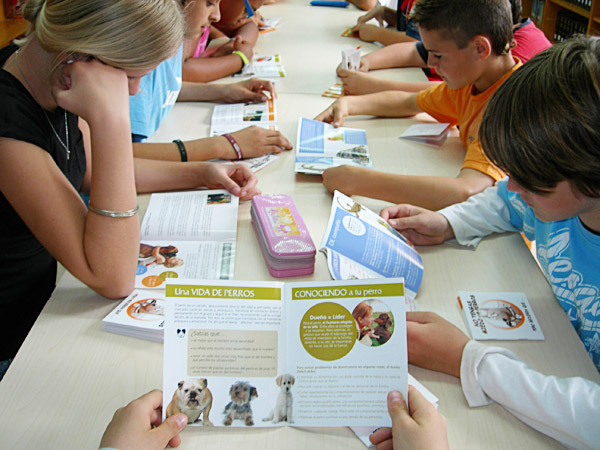
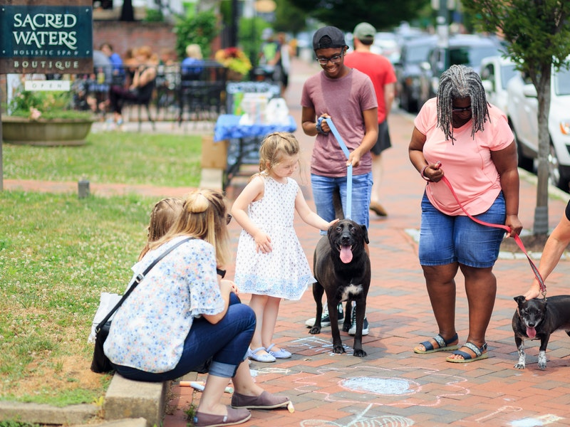
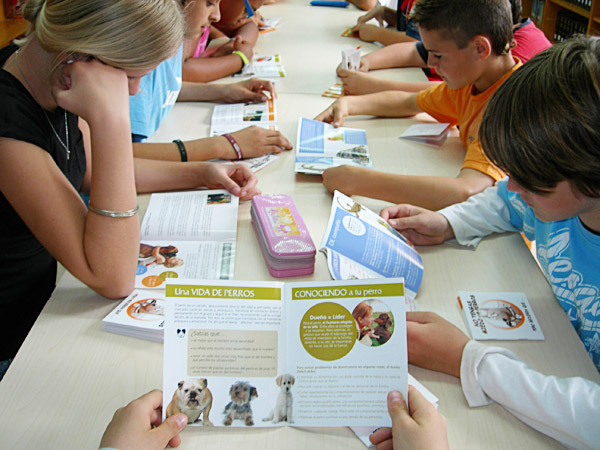
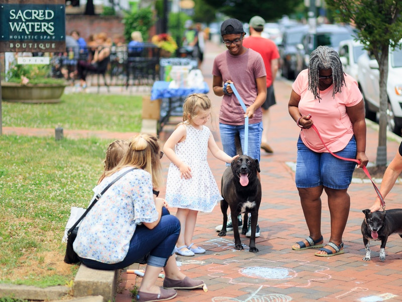
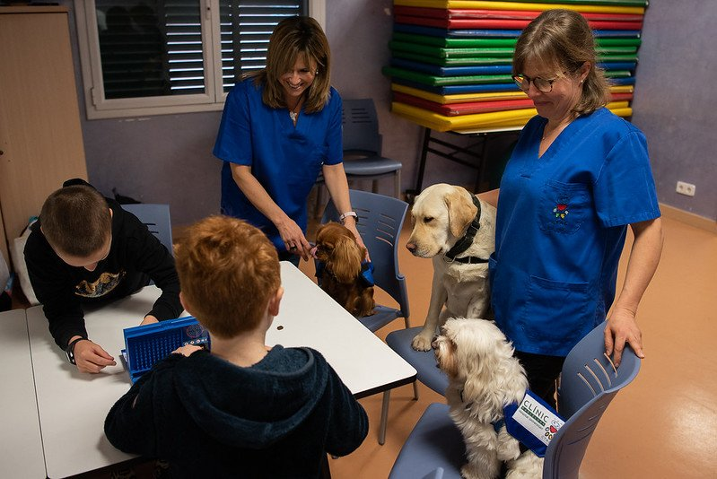
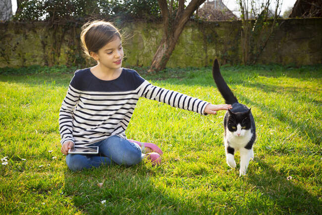
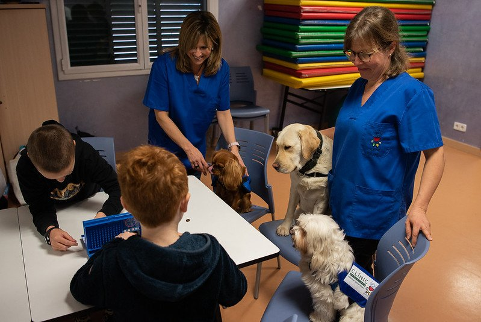
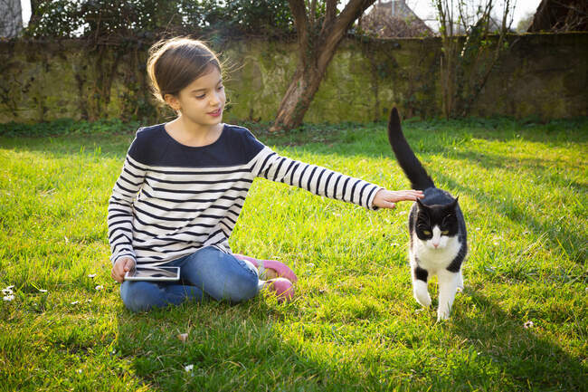

Programas de la Fundación Titus
La Fundación Titus ofrece una variedad de programas y servicios destinados a apoyar y promover el bienestar animal, así como a educar y sensibilizar a la comunidad sobre la importancia de proteger a los animales necesitados. Aquí hay algunos ejemplos de programas que la fundación ofrece:
Rescate y adopción de animales
Un programa de rescate que se dedica a rescatar animales abandonados, maltratados o en situación de riesgo, proporcionándoles cuidado, rehabilitación y preparación para la adopción responsable.

Educación y sensibilización
Programas educativos dirigidos a escuelas, comunidades y grupos de interés para aumentar la conciencia sobre el bienestar animal, la tenencia responsable de mascotas, la prevención del abuso animal y la importancia de la adopción en lugar de la compra.
 



Programas de voluntariado
Cualquier persona es bienvenida a participar como voluntario en diversas actividades, como cuidado diario de los animales, eventos de recaudación de fondos, campañas de sensibilización y actividades de mantenimiento de instalaciones.
Campamentos y talleres para niños
Campamentos de verano, talleres educativos y actividades interactivas diseñadas específicamente para niños y jóvenes, con el fin de enseñarles sobre el cuidado y el respeto hacia los animales.
 


